Learning without labels
Reader-friendly version of the 59 lecture slides: the lecture content in normal flow, with figure descriptions and data tables where the figure carries data. Open the presentation.
Slide 2
Learning without labels
How can a network learn useful features without category labels? Reconstruct the input, generate new samples, match views, predict what is hidden. Then: how do these models relate to the brain?
Slide 3
From AlexNet to today
![Scatter plot of ImageNet multilabel accuracy, 60 to 97.5 percent, against training computation in floating-point operations from 10 to the 18 to 10 to the 24, for 40 image encoders released between 2012 and 2025. Accuracy rises from AlexNet near 62 percent to a cluster inside the gray band of trained human annotators, about 92 to 97 percent. Points are colored by objective: supervised black, self-supervised blue, image-text orange, video yellow; circles are CNNs, diamonds transformers, a square the MambaVision hybrid; gray markers are the 2012 to 2018 models. DINOv3, self-supervised, and several image-text transformers sit at the top right, inside the human band. Qwen3-VL is plotted separately at right because its training computation is unpublished.](../images/L14/serre2026_annrev_fig1_scaling.png)
Scatter plot of ImageNet multilabel accuracy, 60 to 97.5 percent, against training computation in floating-point operations from 10 to the 18 to 10 to the 24, for 40 image encoders released between 2012 and 2025. Accuracy rises from AlexNet near 62 percent to a cluster inside the gray band of trained human annotators, about 92 to 97 percent. Points are colored by objective: supervised black, self-supervised blue, image-text orange, video yellow; circles are CNNs, diamonds transformers, a square the MambaVision hybrid; gray markers are the 2012 to 2018 models. DINOv3, self-supervised, and several image-text transformers sit at the top right, inside the human band. Qwen3-VL is plotted separately at right because its training computation is unpublished.
Open full-size figure- 40 image encoders, networks that turn an image into features, from AlexNet in 2012 to 2025, measured alike. Accuracy climbs from about 60% to the range of trained annotators (gray)
- DINOv3 took about 300,000 times the computation of AlexNet. At AlexNet's 2012 rate, that is about 4,500 years of training
Slide 4
What made scale pay off
Scatter plot of ImageNet multilabel accuracy, 60 to 97.5 percent, against training computation in floating-point operations from 10 to the 18 to 10 to the 24, for 40 image encoders released between 2012 and 2025. Accuracy rises from AlexNet near 62 percent to a cluster inside the gray band of trained human annotators, about 92 to 97 percent. Points are colored by objective: supervised black, self-supervised blue, image-text orange, video yellow; circles are CNNs, diamonds transformers, a square the MambaVision hybrid; gray markers are the 2012 to 2018 models. DINOv3, self-supervised, and several image-text transformers sit at the top right, inside the human band. Qwen3-VL is plotted separately at right because its training computation is unpublished.
Open full-size figure- Self-supervised learning (blue) trains on huge image collections with no category labels; image–caption models (orange) skip them too. The most accurate models learned without category labels. Today
- The transformer (diamonds): an architecture that trains well at scale. A later lecture
Slide 5
The label problem
- Most networks so far learned from a human label: each input came with its class label . ImageNet alone has 1.2 million images labeled by hand
- An infant sees millions of scenes and is told the name of almost none. Much of what a visual system learns must come without labels
- Unsupervised learning, first today: no labels. PCA, the autoencoder and sparse coding find structure in the inputs alone. Generative models: generate new samples that follow the same distribution as the training data
- Self-supervised learning, second: make training targets from the data, hide part and predict it, or match two views. No human labels, and the machinery of supervised learning
Slide 6
What does a network learn from its inputs alone?
Train a network to copy its input through a narrow layer, a bottleneck. The input must be compressed: what does the network keep?
Slide 7
The autoencoder
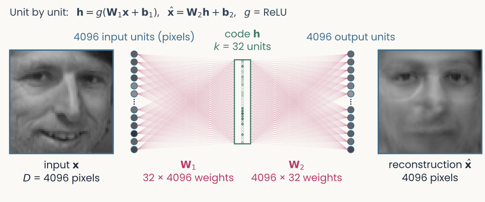
A 1024–32–1024 autoencoder on a held-out CelebA face, drawn unit by unit: a column of input units standing for the 1024 pixels, magenta weight lines W1 fanning into 32 green code units shaded by activity, weight lines W2 fanning out to output units, and the blurrier reconstructed face on the right
Open full-size figure
- Units and weights as usual. The encoder maps ( numbers) to a code ( numbers); the decoder reconstructs . With (undercomplete), the bottleneck forces compression: here, 1024 pixels to 32 numbers
Computed: a 1024–32–1024 network trained on 60,000 CelebA faces, 32 × 32, grayscale; a held-out face
Slide 8
The reconstruction loss
A 1024–32–1024 autoencoder on a held-out CelebA face, drawn unit by unit: a column of input units standing for the 1024 pixels, magenta weight lines W1 fanning into 32 green code units shaded by activity, weight lines W2 fanning out to output units, and the blurrier reconstructed face on the right
Open full-size figure- The target is the input, with no labels: unsupervised learning. Train with backprop: the error goes back through the decoder, then the encoder
Slide 9
What the encoder does: a projection
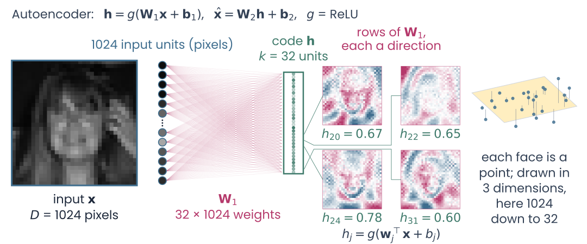
The same held-out face, input units, weight fan and 32-unit code as the last slide. To the right, four rows of the trained encoder weights W1 drawn as 32 by 32 images showing face structure, in a two by two grid, each joined by a line to its code unit and labeled with that unit's value. Further right, a sketch: a cloud of points, a tilted plane, and thin lines dropping each point onto the plane
Open full-size figure
- Each face is a point in 1024 dimensions (sketched in 3). Each row of is a direction; gives coordinates along 32 of them, passed through : a projection from 1024 to 32
- Remember PCA: the directions of maximal variance span the subspace with the least squared reconstruction error. The autoencoder also minimizes squared error, with and free weights. Is it PCA?
Slide 10
With no , the autoencoder recovers PCA's subspace
Let hold the top eigenvectors of the data's covariance, as columns, with centered:
| Code | Reconstruction | |
|---|---|---|
| PCA | ||
| Linear autoencoder |
- PCA restricts itself to orthonormal directions; the linear autoencoder does not. Yet the best for squared error is the same projection, . With no nonlinearity, the autoencoder recovers PCA's subspace
- The product is fixed, not each matrix. For any invertible matrix : and work equally well, since cancels. With , the rows of are the eigenvectors
Slide 11
Same subspace, different rows
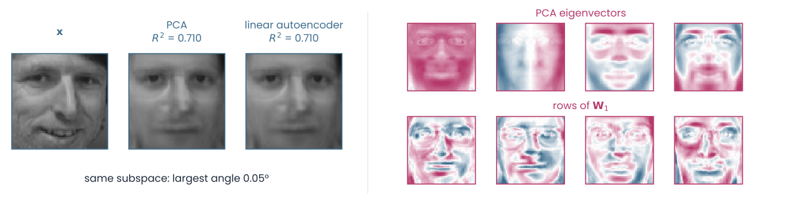
Left, a held-out face and its reconstructions from 32 numbers by PCA and by a linear autoencoder: the two look the same, both R squared 0.809, and the largest angle between their subspaces is below 0.001 degrees. Right, four PCA eigenvectors above four rows of W1, each drawn as a 32 by 32 image: the rows differ from the eigenvectors
Open full-size figure
- Same reconstruction, different weights: the rows of are not the eigenvectors. Training with backprop from another random initialization gives other rows, and the same reconstruction
Slide 12
Nonlinear autoencoders go beyond PCA
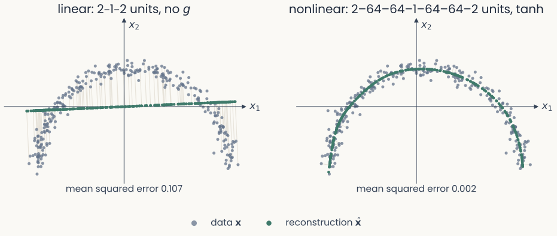
Two panels of 300 points on a noisy half circle in two dimensions, each point joined by a faint line to its reconstruction. Both networks have the same layers, 2-64-64-1-64-64-2. Left, no nonlinearity: the reconstructions lie on a straight line, mean squared error 0.107. Right, tanh: the reconstructions follow the arc, mean squared error 0.002
Open full-size figure
- Same layers and units in both; only differs. No : a flat subspace, however many layers. With : a curved manifold
Computed: toy data, 300 points on a noisy half circle
Slide 13
Try it: the bottleneck
Slide 14
Sparse coding: reconstruct from a few basis functions
The same reconstruction loss, plus L1 regularization on the code, of strength . Unlike L2, L1 sets small values to exactly zero, so no bottleneck is needed, even with more functions than pixels (overcomplete):
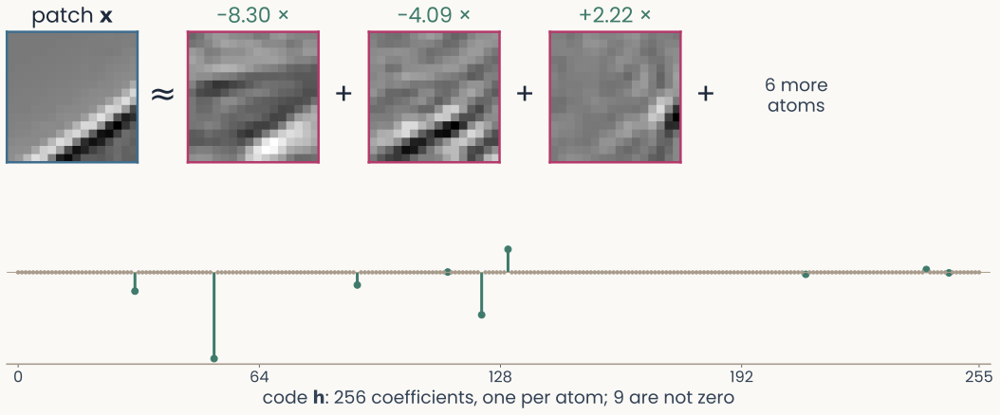
One 16 by 16 whitened image patch, shown to be approximately equal to the sum of three learned basis functions, each an oriented stripe pattern multiplied by its coefficient, plus a few more basis functions. To the right, a stem plot of the patch's 256 code coefficients, almost all exactly zero
Open full-size figure
- Natural image patches, not faces: a few of 256 learned basis functions per patch. They resemble V1 simple-cell receptive fields
Slide 15
What if we keep only the decoder?
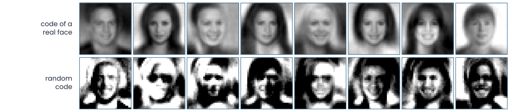
Two rows of eight square faces from the decoder of a plain autoencoder. Top row, decoded from the codes of real held-out faces: blurred but natural faces. Bottom row, decoded from random codes: faces with severe distortion, grainy and with harsh black and white areas
Open full-size figure
- Back to the autoencoder. It needs an input: it reconstructs the image it is given. Yet you can imagine a face with nothing in front of your eyes
- So drop the encoder and give the decoder a random code. It gives distorted faces: nothing forces the training codes to follow the Gaussian we sample from
Computed: same faces, a larger autoencoder, 1024–512–32–512–1024
Slide 16
Variational autoencoder: sampling new images
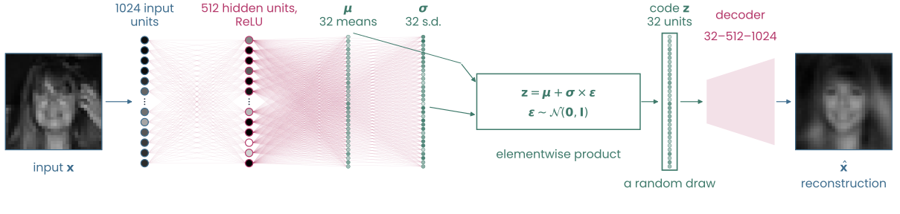
Half of a variational autoencoder drawn unit by unit. A held-out face x feeds a column of input units standing for 1024 pixels, then weights to 512 hidden ReLU units, then two columns of 32 circles, the means and the spreads for this face. Those feed a box where a random epsilon makes one draw z, the 32-unit green code. To the right, a small decoder trapezoid and the reconstructed face
Open full-size figure
- A variational autoencoder (VAE) adds a loss term keeping codes near a Gaussian: we can sample them
- Encoder output: 32 means, 32 standard deviations. The code is a random sample
- Plain backprop is not enough: no error passes back through a random draw. Variational inference gives the loss; rewriting the sample lets backprop train it ("Going further")
Slide 17
What the VAE gives you: new faces
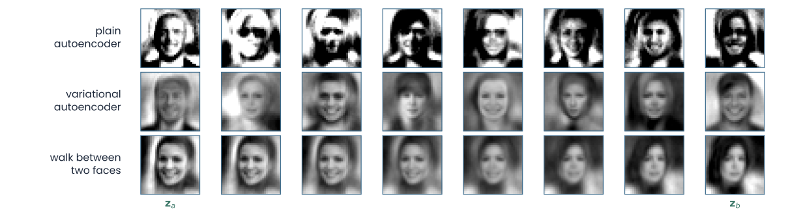
Three rows of square faces. First row, a plain autoencoder decoding random codes: recognizable but distorted, grainy, overly dark and light faces. Second row, a variational autoencoder decoding the same codes: more coherent, blurry faces. Third row, a walk between two held-out faces in the code of the variational autoencoder: eight faces changing gradually
Open full-size figure
- Top two rows, the same eight random codes as before. Plain autoencoder: distorted, harsh faces. VAE: more coherent new faces, still blurry and grainy
- Walk between two codes: take the encoder's mean codes for two faces, and , then decode points on the straight line between them, , with from 0 to 1. One face turns gradually into another
Slide 18
Try it: walk the code
Slide 19
Beyond the VAE
- Extensions of the VAE: many, and you may hear about the β-VAE, which weights the Gaussian term more heavily
- Alternatives for generation: GANs, diffusion models
- There is a lot of exciting work on image and video generation. It is less directly relevant to neuroscience, and we skip it today to save time
- If you want to learn more about generative models, they make a good final project
Slide 20
From reconstruction to prediction
Self-supervised learning: first match views of an image (SimCLR, DINO), then predict what is hidden (MAE). The goal: approach the accuracy of a fully supervised network, without its labels
Slide 21
Reconstruction is not enough
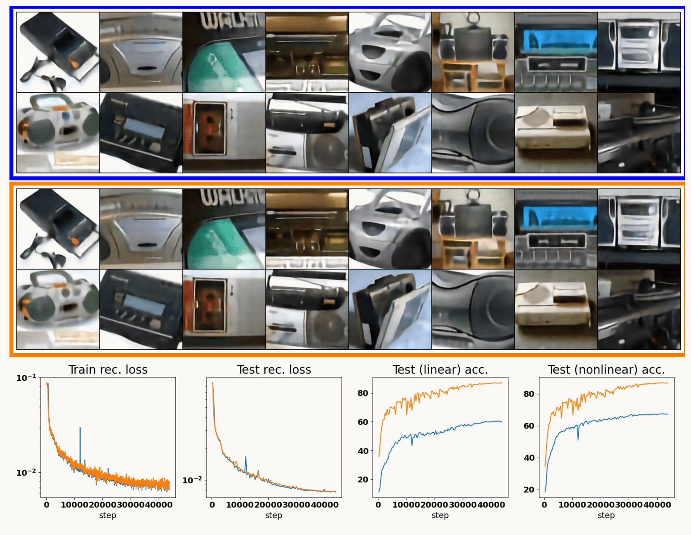
From Balestriero and LeCun: two ResNet-34 autoencoders give near-identical reconstructions of stereos and equal reconstruction loss, yet test accuracy with a linear readout is about 60 against 87 percent
Open full-size figure
- Good reconstructions do not imply good features: two autoencoders with the same reconstruction loss score about 60% and 87% on a linear readout (left; the better one also got a supervised signal)
- So copying the input does not guarantee features useful for other tasks. What else could the target be, with no labels?
Slide 22
Self-supervised learning
- Self-supervised learning: learning without human labels, for example by matching two views of one image or filling in hidden image regions
- Pretext task: the training task used to learn the features, such as predicting an image's rotation. Keep the encoder, the network that produces the features; throw away the training head on top of it
- Pretraining: this initial learning, before adaptation to a particular task. The encoder can then serve new tasks in two ways:
- Linear readout: freeze the encoder, so that its weights no longer change, and train a linear classifier on its features for the new task
- Fine-tuning: keep adjusting the pretrained weights for the new task
Slide 23
Early pretext tasks
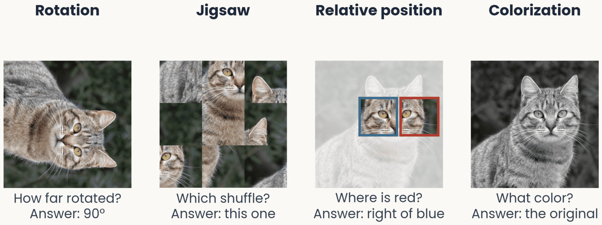
One cat photograph transformed for four tasks. Rotation: the photo turned 90 degrees, predict the angle. Jigsaw: its nine tiles shuffled, predict the shuffle. Relative position: two neighboring patches, predict where the red one lies relative to the blue. Colorization: the gray-level photo, predict the colors
Open full-size figure
- Each is ordinary softmax classification on a label we make from the image: rotation, 4 classes; relative position, 8; jigsaw, which of a chosen set of shuffles. To say which way is up, a network must know something about cats. Useful features, but well below supervised ones
Slide 24
Three classes of methods
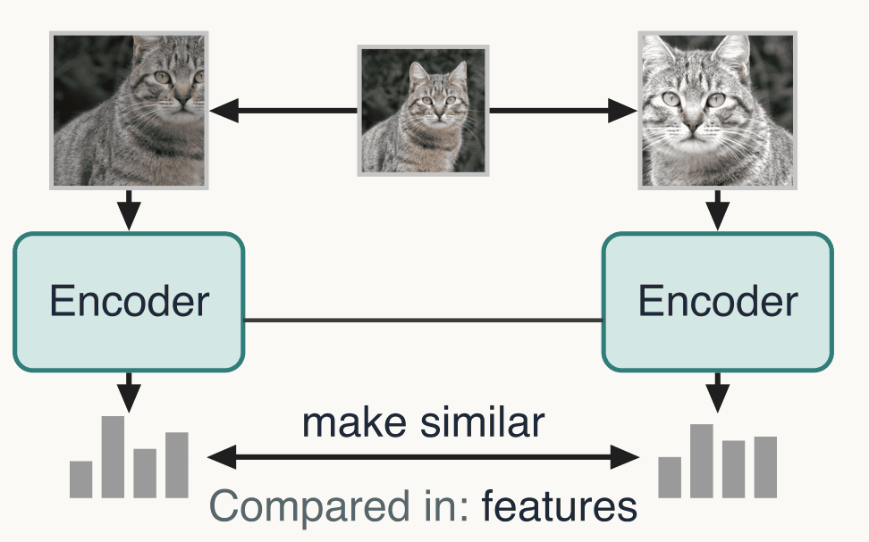
Schematic from the Annual Review chapter: two views of a cat image, with representations pulled together and other images pushed apart
Open full-size figure
Contrastive (SimCLR): match two views, push other images apart
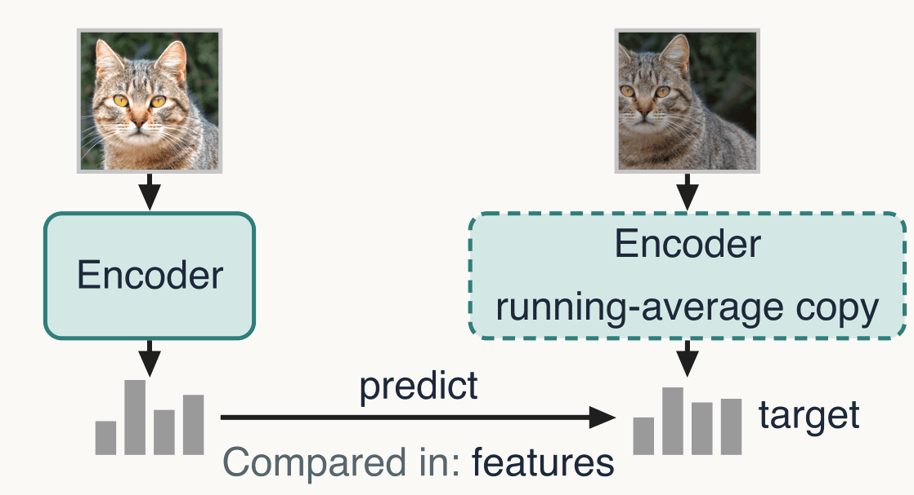
Schematic from the Annual Review chapter: one view of a cat through an encoder predicts the output of a running-average copy on another view
Open full-size figure
Self-distillation (DINO): match a slowly updated copy of itself
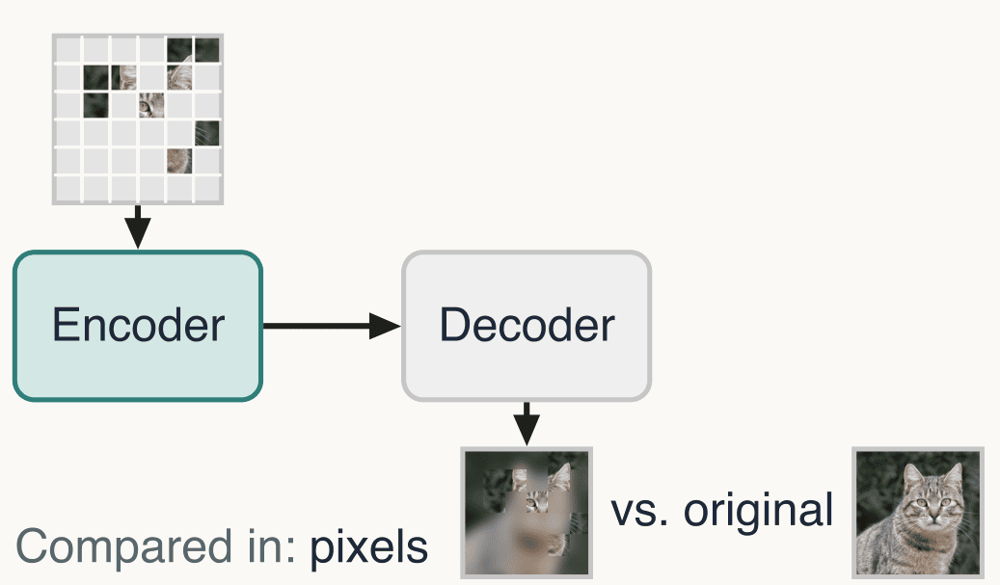
Schematic from the Annual Review chapter: a cat image with most patches hidden goes through an encoder and decoder and is compared with the original
Open full-size figure
Masked prediction (MAE): fill in hidden patches
- We take them in turn, and for each: what prevents collapse, where it excels, where it fails
Slide 25
Attraction: two views of one image should agree
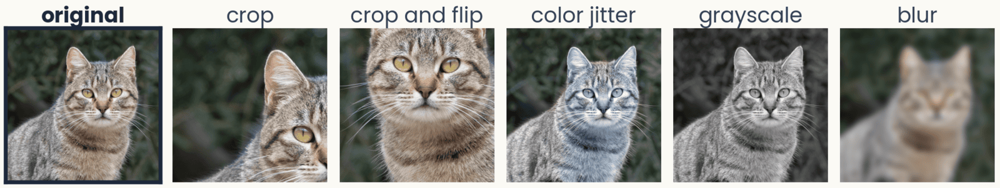
One cat photograph and five random views of it: a crop, a crop and flip, a color-jittered version, a gray-level version and a blurred version
Open full-size figure
- A view: a copy changed by data augmentation, a stand-in for changes in viewpoint or lighting
- Over hundreds of epochs, each image gets new random views every time, never one fixed pair
- What the views change is what the network learns to ignore: position for crops, color for color jitter
- Attraction alone allows collapse: every image gets the same output, and nothing is learned
Slide 26
Add repulsion: contrastive learning (SimCLR)
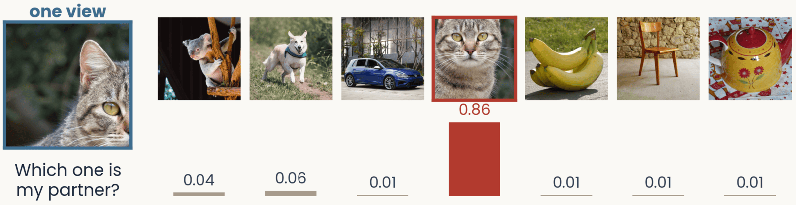
One crop of a cat on the left, seven candidates on the right: a koala, a dog, a car, another crop of the same cat outlined in red, bananas, a chair and a teapot. Bars show a schematic probability for each, 0.86 for the other cat crop and at most 0.06 for the others
Open full-size figure
- Positives: two random views of one image. Negatives: the other images in the batch, sampled at random. Each view must identify its positive among them: softmax classification
- The loss, InfoNCE ("Going further"), pulls positives together and pushes negatives apart. Repulsion prevents collapse. SimCLR applies the loss on a small training head after the encoder, thrown away after training
Slide 27
SimCLR: where it excels
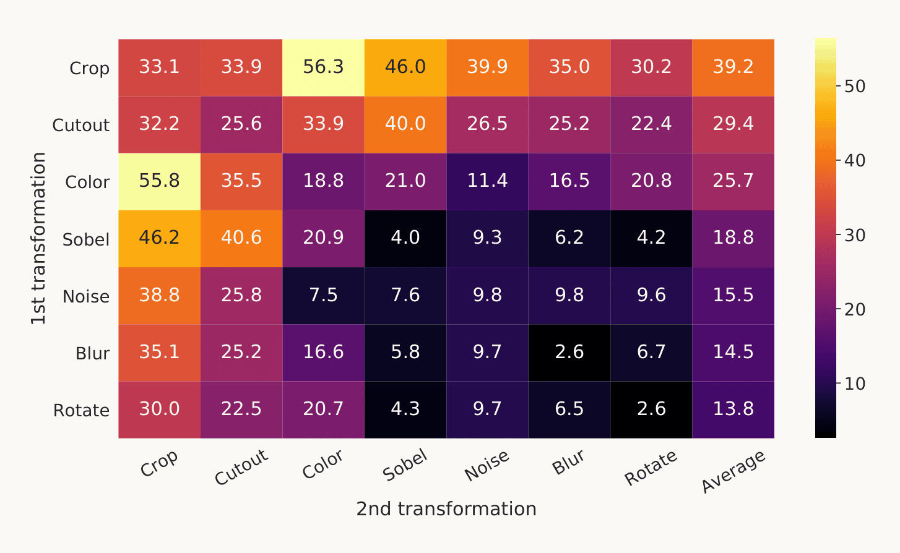
Heat map from Chen et al. of linear readout accuracy for pairs of augmentations on ResNet-50. Crop with color stands out at 56.3 and 55.8; most single transforms are low, crop alone 33.1
Open full-size figure
- Linear readout on a frozen ResNet-50: 69% on ImageNet, against 60 to 64% for earlier methods
- Fine-tuning with few labels: pretrain with no labels, then fine-tune on 1% of the labels. Top-5 accuracy 75%, against 48% for supervised training on that same 1%
- It depends on the views. Figure: readout accuracy for each pair of augmentations. Crop alone, 33%. Crop plus color, 56%
Slide 28
SimCLR: where it fails
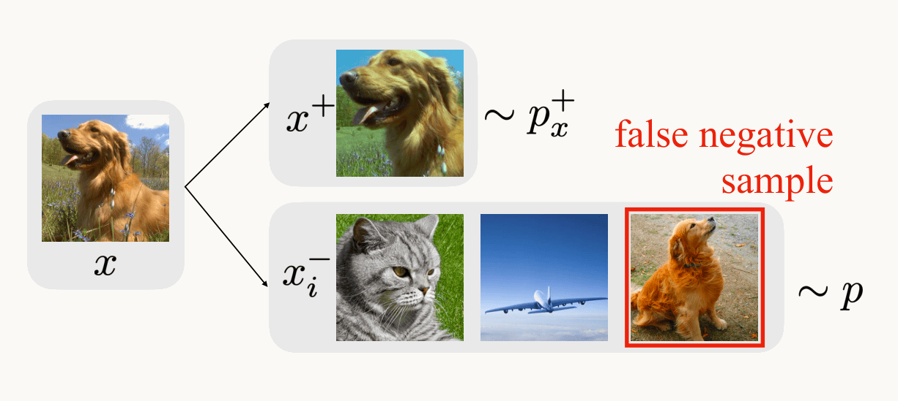
Schematic from Chuang et al.: a golden retriever, an augmented view of it as the positive, and negatives: a cat, an airplane and a second golden retriever outlined in red as a false negative
Open full-size figure
- False negatives: negatives are sampled at random, with no labels, so two images of one class, such as two dogs, get pushed apart. With 30 negatives on CIFAR-10: about 80% accuracy; 88% when sampled from different classes
- Lost information: learning to ignore a change means not being able to report it. On ImageNet, rotation is decoded at 68% from the encoder, 26% from the training head (chance 25%)
- Batch size: the batch supplies the negatives, and a larger batch gives more of them, including harder ones. Default 4096 images; smaller batches can come close
Slide 29
Second class: self-distillation
DINO: match a slowly updated copy of the network, with no repulsion
Slide 30
DINO: drop repulsion, match a slowly updated copy
Schematic from the Annual Review chapter: one view of a cat goes through the encoder, another view goes through a dashed box labelled encoder, running-average copy. The first output is trained to predict the second, the target, compared in features
Open full-size figure- How DINO avoids collapse with no repulsion: the network learns to match a slowly changing copy of itself that sees another view of the image. The copy's output is adjusted so that it can neither pile onto one value nor flatten out: centering stops one value from dominating, sharpening stops the output from going flat
- Without repulsion there are no negatives, so no false negatives
Slide 31
What a ResNet learns with no labels
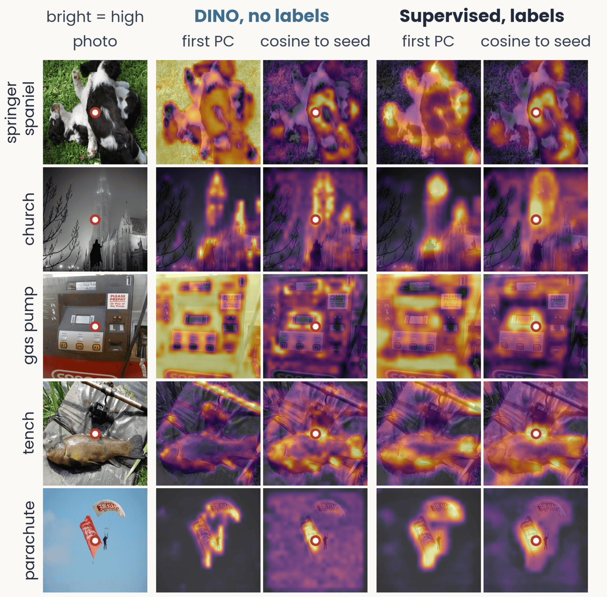
Springer spaniel, church, gas pump, tench and parachute photographs, each with first-PC and center-seed cosine maps from a DINO and a supervised ResNet-50. The maps are patchy and do not reliably cover the object
Open full-size figure
- The last layer of a DINO ResNet-50 is a 25 × 25 map, one feature vector per location
- First PC: PCA over one image's locations: its largest contrast in features
- Cosine to a seed: which locations have features like those at one point
- With no labels, locations with similar appearance, probably texture, group together, about as in a supervised ResNet-50 trained on 1.3 million labeled images. Neither reliably covers the whole object
Slide 32
The same objective on a transformer

Figure 1 of Caron et al.: photographs with the self-attention map of a DINO vision transformer beneath each, outlining the object with no label, mask or box given
Open full-size figure- The same DINO objective on a vision transformer, an architecture you meet in a later lecture. The map is the last layer's self-attention
- These maps outline objects more sharply. Not a controlled comparison with the ResNet maps: other photographs, another kind of map
Slide 33
DINOv2: the same parts, matched across images
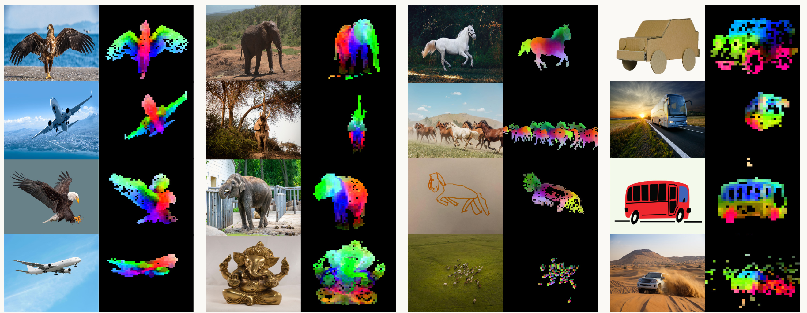
Figure 1 of Oquab et al.: four columns of photographs with PCA maps of patch features beside them, colored by the first three components. Eagles and airplanes, elephants and a statue, horses and a drawing, vehicles: corresponding parts share colors
Open full-size figure
- DINOv2 (Meta): the same idea plus predicting a copy's features for hidden patches, on 142 million curated images, with no labels
- PCA on the patch features of each column's images, first three components as colors. The same parts get the same colors across poses, styles and even different objects: wings of an eagle and of a plane
Slide 34
DINOv3: sharp features at high resolution
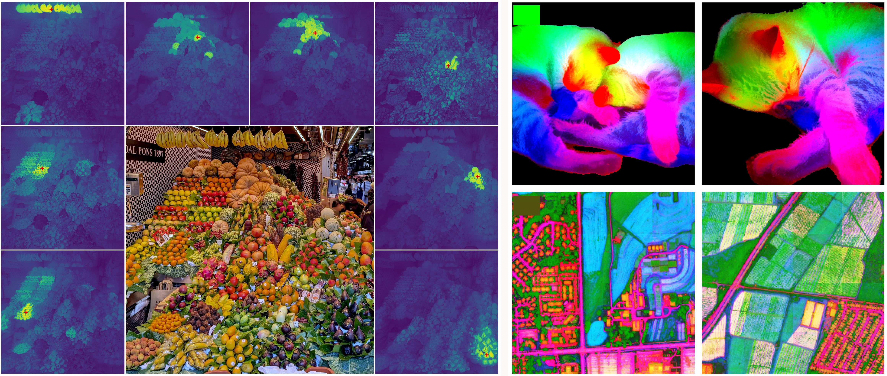
Left, Figure 3 of Simeoni et al.: a market stall of fruit surrounded by cosine similarity maps, each lighting up the patches like one marked patch. Right, Figure 1c and d: PCA maps of a cat and of aerial images, showing fine detail
Open full-size figure
- DINOv3 (Meta): 1.7 billion images, 7 billion parameters, no labels. One frozen encoder serves many tasks
- Left: cosine to a seed, as on the ResNet slide, at 4096 pixels: a marked patch finds its own kind of fruit. Right: PCA colors on a cat, and on aerial images from a separate model trained on satellite data
Slide 35
Third class: masked prediction
MAE: no views to match. Hide most of an image and fill it in
Slide 36
Masked autoencoder (MAE): drop the views
Schematic from the Annual Review chapter: a cat image with most patches hidden goes through an encoder and a decoder; the output is compared in pixels with the original
Open full-size figure- MAE (Meta): hide 75% of the patches and reconstruct them, inferring what was not shown
- A constant output cannot reconstruct different images, so collapse is not the risk. What it adds: no paired views to match
- Closely related: JEPA (LeCun), which predicts the features of hidden regions, not their pixels
Slide 37
MAE: real reconstructions
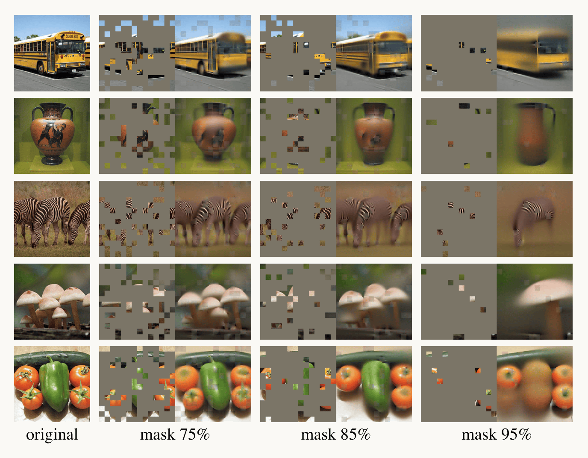
Bus, vase, zebras, mushrooms and vegetables reconstructed from 75, 85 and 95 percent hidden patches. Reconstructions blur as masking rises, and at 95 percent the green pepper disappears
Open full-size figure
- From 25% of the patches, a masked autoencoder (a transformer) reconstructs the bus and the zebras
- At 95% hidden, it still draws a plausible bus. But the green pepper is gone: filled in from what is typical, not from what was there
Slide 38
SimCLR, DINO, MAE: each removes a dependence
| Attraction + repulsion (SimCLR) | Attraction only (DINO) | Masked prediction (MAE) | |
|---|---|---|---|
| Removes | labels | negatives | views |
| Prevents collapse by | repulsion | slow copy, centering, sharpening | targets differ image to image |
| Excels | few labels | frozen features: 78% against 68% | fine-tuning: 83.6% against 82.8% |
| Fails | false negatives; needs the right views | delicate balance | frozen readout |
On the same transformer (ViT-B/16), with each paper's recipe, DINO gives stronger frozen features; MAE gains more from fine-tuning
Slide 39
One recipe: pretrain once, read out cheaply
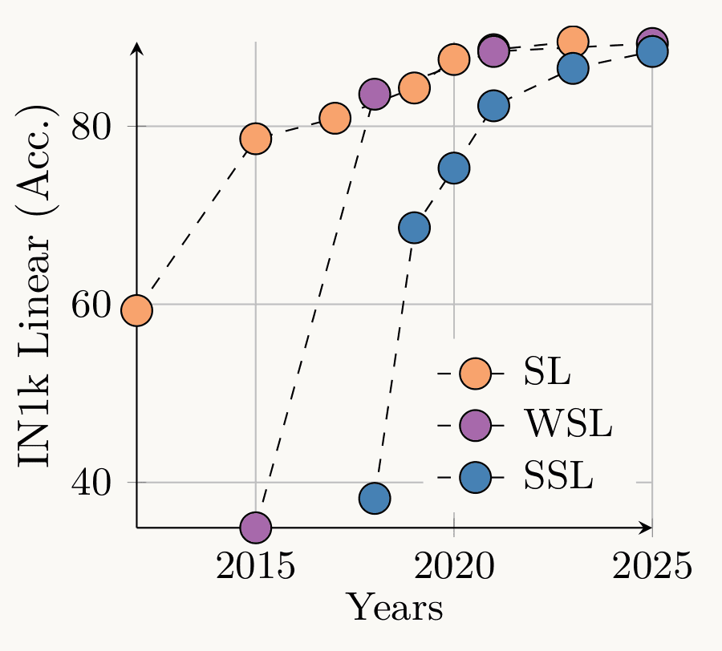
Figure 1a of Simeoni et al. 2025: ImageNet accuracy of a linear readout by year, 2012 to 2025. Supervised models rise from about 60 to near 90 percent. Self-supervised models start near 38 percent around 2018 and rise steeply, reaching the same level by 2025
Open full-size figure
- Pretrain once with no labels, then fit a linear readout on the frozen encoder
- Figure: that readout's ImageNet accuracy by year. SL: supervised. WSL: weakly supervised, from hashtags or captions. SSL: self-supervised
- Self-supervised pretraining now approaches supervised models on ImageNet: labels are needed only for the readout
- Foundation models work this way: large models pretrained on broad data, typically without labels, then adapted to many tasks
Slide 40
Back to the scaling figure
Scatter plot of ImageNet multilabel accuracy, 60 to 97.5 percent, against training computation in floating-point operations from 10 to the 18 to 10 to the 24, for 40 image encoders released between 2012 and 2025. Accuracy rises from AlexNet near 62 percent to a cluster inside the gray band of trained human annotators, about 92 to 97 percent. Points are colored by objective: supervised black, self-supervised blue, image-text orange, video yellow; circles are CNNs, diamonds transformers, a square the MambaVision hybrid; gray markers are the 2012 to 2018 models. DINOv3, self-supervised, and several image-text transformers sit at the top right, inside the human band. Qwen3-VL is plotted separately at right because its training computation is unpublished.
Open full-size figure- DINOv3 pretrained on 1.7 billion images with no category labels. Others at the top use captions, or labels
- Few labels are needed afterwards: ten labeled images per ImageNet category, under 1% of the labels, give a linear readout of DINOv2 or DINOv3 about 87% accuracy (any valid label counts). Most of the learning happens in pretraining, without category labels
Slide 41
From images to video
Toward more ecologically valid data: a continuous stream of experience
Slide 42
From static images to a stream of experience
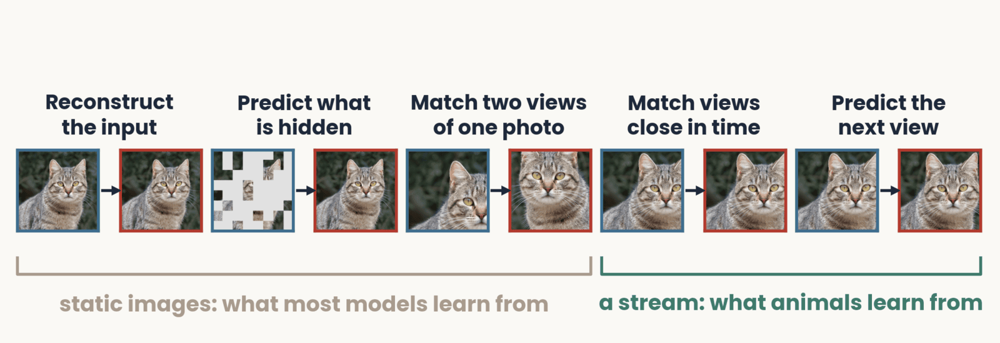
Five pairs of images of one cat, input on the left and target on the right. Reconstruct the input: the photo and itself. Predict what is hidden: a masked photo and the original. Match two views of one photo: two different crops. These three are bracketed as static images, what most models learn from. Match views close in time and predict the next view: slightly shifted frames, bracketed as a stream, what animals learn from
Open full-size figure
- Each step changes what the network must predict: from one image, to two views, to what comes next
- Most models learn from unrelated images; animals learn from a continuous stream. The main difference is less the amount of experience than its kind
Slide 43
How much visual experience?
- Models: on the order of 10⁹ image presentations in pretraining. Children: 10⁸ to 10⁹ visual samples by age six, up to about 4 × 10⁹ by early adulthood
- Children are still more efficient. Networks needed more examples than estimated childhood exposure to match three-year-olds' recognition under degraded viewing
- Biological vision does not start from scratch. Distinct visual pathways are detectable in newborns, spontaneous retinal activity before eye opening has structure related to motion, and inexperienced chicks already prefer biological motion
- Pretraining may stand in for some of what evolution and prenatal development provide
Slide 44
Three learning signals in a stream
| Signal | What it is | What it can teach |
|---|---|---|
| Temporal continuity | an object persists across successive views | object constancy: recognizing an object despite changes in its retinal image |
| Common fate | parts that move together belong together | which regions form one object |
| Predictability | one view regularly follows another | what causes change: moving objects and their interactions |
- Each signal is available in the stream, with no labels. Invariance alone is not enough: a representation that treated every image alike would be invariant too, so it must stay selective for object identity
Slide 45
Learning from time: one child's head camera
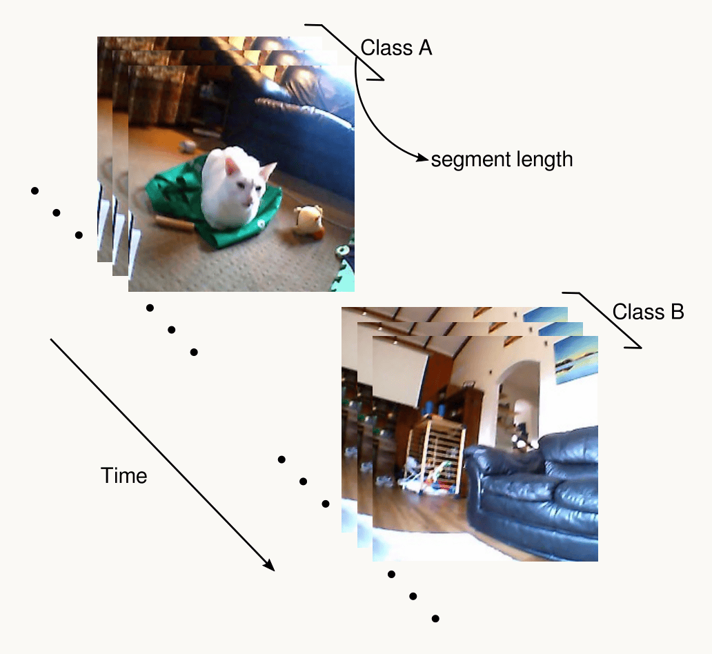
Head-camera video frames stacked along a time arrow. A group showing a white cat on a green cushion is labelled Class A, and a later group showing a living room with a couch is labelled Class B. The depth of each stack is the segment length
Open full-size figure
- The data: about 200 hours of video from a camera on one child's head, between 6 and 32 months. No labels
- The task: cut the video into segments about 5 minutes long and train a convolutional network (MobileNetV2) to say which segment a frame came from
- Time alone supplies the training labels. It works on that child's own objects: better than a network trained with ImageNet labels. On new toys, the ImageNet network wins
Slide 46
Models that learn from video and generate it
- Learning from video: V-JEPA (Meta) predicts the features of hidden parts of a clip, the masked idea extended to time
- A stream is not enough: in action-recognition benchmarks, many categories can be recognized from a single frame, so a model need not use time at all
- What is predicted may matter: with the same input, predicting subsequent views brought feature use closer to people's more consistently than filling in between views
- Generating video: models such as Sora (OpenAI) and Veo (Google) now synthesize video from text. Exciting, and still a good final project. These data move models toward more ecologically valid experience
Slide 47
Does the brain need labels?
Now that these models work: how do they compare with biological vision?
Slide 48
Which of these methods is brain-like?
- Probably none of them. SimCLR, DINO and masked prediction are not proposals for what brains do
- Why study them, then? They train at scale, and at convergence they give clean, somewhat idealized representations: what a learning principle can produce from images or video
- It is less about the algorithm than about the principle. Because these algorithms work well, we can vary a principle and test it: the objective, the training data, the constraints on the circuit
- The test is whether the resulting representations reproduce neural and behavioral data. We are not there yet: there is a long way to go
Slide 49
More accurate is not reliably more brain-like
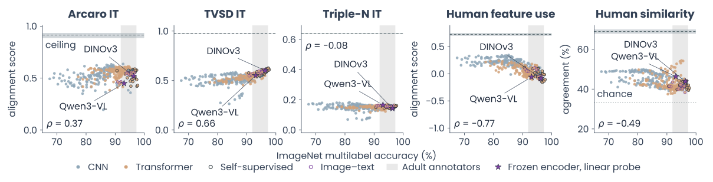
Five scatter plots in a row of ImageNet multilabel accuracy against alignment with biological vision for 363 classifiers. IT prediction on three datasets: correlation 0.37 for Arcaro, 0.66 for TVSD, minus 0.08 for Triple-N, all well below each measure's ceiling. Human feature use: minus 0.77. Human similarity judgments: minus 0.49. DINOv3 and Qwen3-VL are marked
Open full-size figure
- IT prediction: mixed across datasets, well below the ceiling. Human feature use and similarity judgments: alignment falls as accuracy rises
- A stronger test: do models reproduce how controlled changes in experience alter vision?
Slide 50
Object constancy depends on temporal experience
Change how views follow each other in time, and tolerance changes:
- Monkeys: swapping an object's identity across eye movements reshaped the position tolerance of IT neurons
- Rats: reared with temporally shuffled movies, they had V1 neurons with less position tolerance, while orientation tuning was largely preserved
- Newborn chicks: slow rotation of one object supported recognition from new viewpoints; faster rotation favored familiar views
These are among the few neural laws of visual learning established so far. A model of temporal learning must reproduce them
Slide 51
Where matching views fails, and what prediction adds
- Common fate, a failure: chicks reared with one moving object recognized it on new backgrounds. Self-supervised models trained on views or successive frames, in virtual versions of the same chambers, did not
- One possible explanation: matching whole views does not by itself require separating an object from its background
- Prediction, a candidate: a model predicting the next frame segmented objects by motion, and these segments taught a second pathway to see objects from form alone, in static images. Disabling prediction abolished the transfer
Scaling has so far increased the amount of experience models receive, not its kind. A project question
Slide 52
Recap
- Autoencoder: reconstruct the input through a bottleneck. With no nonlinearity, it recovers PCA's subspace. Variational autoencoder: a generative model; sample a code and decode it. Sparse coding: a few active units through L1 regularization
- Self-supervised learning: derive training targets from the input. Attraction + repulsion (SimCLR), attraction only (DINO), masked prediction (MAE): each removes a dependence. Pretrain once, then fit a linear readout. Video moves this toward more ecologically valid experience
- Brains: none of these methods is brain-like; they let us test principles at scale. More accurate is not reliably more brain-like. A stream of experience offers three signals that models mostly do not yet use. There is a long way to go
- Three ways to get a representation close Theme 2: PCA, supervised backprop, and learning without labels
Slide 53
Looking ahead
- Next lecture, Tuesday: recurrent networks. Theme 3 opens with networks that keep a state over time, and a network that decides the way a monkey does
- Mon 11/9: the third assignment is due. Tue 11/10: the fourth is released
- Thu 11/19: project teams on Canvas. Tue 11/24: project proposal, one page per team. Today's question, does a network trained without labels predict a neural dataset (TVSD, Triple-N) as well as a supervised one, is a project
- Tue 12/1: Exam 2, on the second half of the course, including today
Slide 54
Further reading for the research trail
Optional. Any paper from any lecture qualifies; these are preferred.
- Chen et al. ICML 2020: SimCLR, and what each augmentation contributes
- Caron et al. ICCV 2021: DINO, learning from a running-average copy
- He et al. CVPR 2022: masked autoencoders, hide 75% of the image and reconstruct it
- Spens & Burgess Nat Hum Behav 2024: consolidation as training a generative network
- Higgins et al. Nat Commun 2021: single β-VAE units match single face-patch neurons
- Matteucci & Zoccolan Sci Adv 2020: temporally shuffled rearing reduces V1 position tolerance
- Garimella et al. ICLR 2024: a newborn embodied Turing test, where models fail and chicks succeed
- Orhan, Gupta & Lake NeurIPS 2020: what one child's head-camera video teaches a network, and its limits
Slide 55
Minute paper
Submit on Canvas → Minute papers → Minute Paper 15 (access code read out in class).
Write three brief points in your own words:
- Pick one method from today (autoencoder, SimCLR, DINO or masked prediction). In your own words: what is the network trained to predict, and where does that target come from, if not from a human label?
- Something you do not yet understand, or a question still open
- Another idea you found interesting, and why it matters for brains, behavior or AI
Credit for a thoughtful attempt, not for being correct.
Slide 56
Going further
The VAE loss, and the contrastive loss in equations and code
Slide 57
The VAE loss
- The reconstruction term is the loss of the plain autoencoder. The KL term is the Gaussian constraint: it is zero when every and . A plain VAE has ; a β-VAE has
- Reparameterization: write the sample as , with . All the randomness sits in , so the error passes back through and by ordinary backprop
Slide 58
The InfoNCE loss
Here is the head's output for view , not a VAE sample. Cosine similarity and temperature . For a positive pair :
- Softmax cross-entropy where the target class is the matching view: a batch of images gives views, and each view does a -way classification
- Familiar machinery, new label source. The temperature sets how hard the closest negatives push
Slide 59
PyTorch: the InfoNCE loss
import torch
import torch.nn.functional as F
def info_nce_loss(z, tau=0.5):
# z: (2B, d), two augmented views stacked; rows 0..B-1 pair with B..2B-1
z = F.normalize(z, dim=1) # cosine similarity = dot of unit vectors
sim = z @ z.T / tau # (2B, 2B) similarity matrix
n = z.shape[0]
sim.fill_diagonal_(float("-inf")) # a view is never its own positive
targets = (torch.arange(n) + n // 2) % n # the positive of row i is its other view
return F.cross_entropy(sim, targets) # softmax cross-entropy
- Cross-entropy over the batch: the positive view is the target class
- The supervised toolkit, cross-entropy and backprop, unchanged; only the label source changed